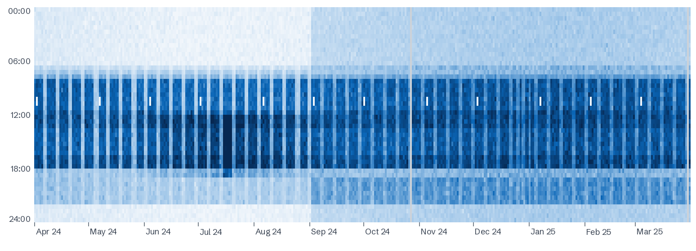

A heatmap has one column per day and one row per half hour, coloured by demand. On a 24-hour hospital you won't see pale weekends; instead, read the night rows (your base load), the weekday daytime band (outpatients, theatres and offices), summer afternoons (cooling), and any date where the pattern changes and stays changed.

What you're looking at
- Across: days, from the start of the period to the end.
- Down: time of day, midnight at the top.
- Colour: demand in each half hour, pale for low and dark for high.
A year is about 17,500 half hours. A table can't show them; a heatmap shows them all, which is why it's the fastest way to understand a site you've never visited.
What normal looks like on a hospital
- Nights are never pale. Wards, ventilation, imaging and fridges keep demand well above zero. How dark the night rows are is your base load.
- A weekday daytime band from outpatients, theatres, diagnostics, kitchens and offices. Weekends and bank holidays are lighter, but not empty.
- A morning ramp as plant starts and clinics open, and a smaller evening shoulder.
- Seasonal shading. Darker summer afternoons on sites with chillers; slightly darker winters where electric heating, frost protection or heating pumps run.
A separately metered health centre or office should look like an office: a dark weekday band and pale nights and weekends. If it doesn't, read out-of-hours use.
Patterns worth checking on healthcare sites
| What you see | What it often means |
|---|---|
| Nights and weekends darker from a particular date | A setback or schedule has stopped working, often theatre or outpatient ventilation after a controls change |
| A pale stripe at the same time once a month | The generator test: the site runs on its own generators and imports less from the grid |
| Dark blocks of several days or weeks | The CHP engine was off for maintenance or a fault, so the grid supplied the whole site |
| Darker afternoons only in hot spells | Chillers and split cooling; these days usually set the year's peak |
| Weekday band starting well before clinics open | Optimum start or fixed timers set too early |
| Bank holidays as dark as weekdays | Holiday dates missing from the BMS calendar, mainly in outpatients and offices |
| A single dark or pale column | One unusual day: a major incident, an outage, works or a reading error |
| Grey gaps | Missing readings, not zero use. The analyser never counts missing data as zero |
From what you see to what it costs
The heatmap tells you where to look; the figures tell you whether it matters. In the analyser, click any day to compare it with a typical day of the same kind. Then check base load by month for lasting steps, the unusual days list for one-offs, and the headroom tab for the peak days.
Questions people ask
What is a carpet plot?
Another name for the same chart: one column per day, one row per half hour, coloured by demand.
Why does our hospital have a pale line once a month?
Most likely the on-load generator test, when the site runs on its own generators for an hour or so. Check the dates against the test log.
Why are some days grey?
They have no valid readings. Missing data is shown as missing, so a gap never looks like the site was switched off.
Can I see one day in detail?
Yes. Click any day in the analyser to compare its half hours with a typical day of the same kind.